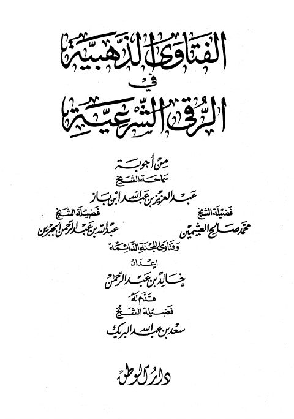

Downloads need an internet connection.
الفتاوى الذهبية في الرقى الشرعية
Authors: عبد العزيز بن عبد الله بن باز محمد بن صالح العثيمين عبد الرحمن الجبرين
Publishers: الوطن
**▫️ العنوان: الفتاوى الذهبية في الرقى الشرعية** ▪️ المؤلف: #ابن_باز • #ابن_عثيمين • #عبد_الرحمن_الجبرين ▫️ الناشر: #الوطن ▪️ تاريخ النشر: 1996م ▫️ بلد النشر: الرياض، #السعودية ▪️ الطبعة: 1 ▫️ عدد الأجزاء: 1 ▪️ الصفحات: 320 ▫️ نوع الوعاء: #كتاب ▪️ التصنيف الرئيسي: #العقيدة_والمذاهب_والأديان ▫️ التصنيف الفرعي: #الرقي_والتمائم ۪